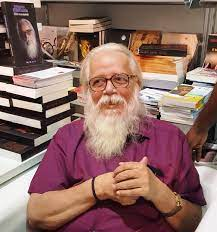

“On the off chance that you come up short, never surrender on the grounds that F.A.I.L. signifies ‘First Attempt
In Learning’. End isn’t the end; truth be told E.N.D. signifies ‘Exertion Never Dies’. In the event that you
find No as a solution, recollect N.O. signifies ‘Next Opportunity’. So Let’s be positive.”
Nambi Narayanan
(Aerospace engineer)
S. Nambi Narayanan (born 12 December 1941) is an Indian aerospace scientist, who worked for the Indian Space
Research Organisation (ISRO) and contributed significantly to Indian space program by developing the Vikas
rocket engine. He led the team which acquired technology from the French for the Vikas engine used in the first
PSLV that India launched. As a senior official at the Indian Space Research Organisation (ISRO), he was
in-charge of the cryogenics division. He was awarded the Padma Bhushan, India's third-highest civilian award,
in March 2019.
In 1994, he was falsely implicated in an espionage case, arrested and physically tortured in custody. The
charges against him were disproven by the Central Bureau of Investigation (CBI) in April 1996, and the
Supreme Court of India stopped the Kerala government on technical grounds from continuing its investigation.
In 2018, the Supreme Court, through the bench of Dipak Misra, awarded Narayanan a compensation of ₹50 lakh
(equivalent to ₹57 lakh or US$71,000 in 2020) . The Government of Kerala decided to give him a further ₹1.3
crore (equivalent to ₹1.5 crore or US$190,000 in 2020). The film Rocketry: The Nambi Effect, based on
his life, starring and directed by R. Madhavan, was released in July 2022.
After studying mechanical engineering in Madurai, Narayanan started his career in 1966 at ISRO as a technical
assistant at the Thumba Equatorial Rocket Launching Station. He was sent to Princeton University on
deputation at Govt expense in 1969. He completed his master's program there in chemical rocket propulsion under
professor Luigi Crocco. He returned to India with expertise in liquid propulsion at a time when Indian rocketry
was still solely dependent on solid propellants. He has claimed that he had to educate
Sarabhai on liquid propulsion technology in his book.